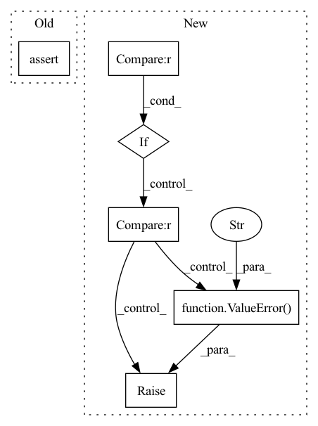

Pattern ID :938
Before Change
input from Prediction Network.
assert input_TN.shape != 4, "Arg 1 must be a 4 dim tensor"
assert input_PN.shape != 4, "Arg 2 must be a 4 dim tensor"
if self.joint == "sum":
joint = input_TN + input_PNAfter Change
input_PN: torch.Tensor
input from Prediction Network.
if input_TN.shape != 4 :
raise ValueError("Arg 1 must be a 4 dim tensor")
if input_PN.shape != 4 :
raise ValueError("Arg 2 must be a 4 dim tensor" )
if self.joint == "sum":
joint = input_TN + input_PN
In pattern: SUPERPATTERN
Frequency: 3
Non-data size: 6
Instances Fragment ID: 3446055
Project Name: speechbrain/speechbrain
Commit Name: 6f004e0c5f965f306a75432392157bdbf525a623
Time: 2020-07-14
Author: a.heba@irit.fr
File Name: speechbrain/nnet/transducer/transducer_joint.py
M Class Name: Transducer_joint
N Class Name: Transducer_joint
M Method Name: forward(4)
N Method Name: forward(4)
M Parent Class: nn.Module
N Parent Class: nn.Module
M File Name: speechbrain/nnet/transducer/transducer_joint.py
N File Name: speechbrain/nnet/transducer/transducer_joint.py
M Start Line: 69
M End Line: 70
N Start Line: 69
N End Line: 74
Before Change
else:
assert y_anchor is not None
assert x_anchor is not None
if self.collection_mode:
x_var, x_mean = torch.var_mean(x, dim=(2, 3)) // [B, C]After Change
return self.forward_normal(x)
else:
if mode == self.Mode.PHASE_CACHING :
x_var, x_mean = torch.var_mean(x, dim=(2, 3)) // [B, C]
x_std = torch.sqrt(x_var + self.eps)
// x_anchor, y_anchor = [B], [B]
// table = [H, W, C]
// update std and mean to corresponing coordinates
self.mean_table[y_anchor, x_anchor] = x_mean
self.std_table[y_anchor, x_anchor] = x_std
x_mean = x_mean.unsqueeze(-1).unsqueeze(-1)
x_std = x_std.unsqueeze(-1).unsqueeze(-1)
elif mode == self.Mode.PHASE_INFERENCE :
def multiply_kernel(x):
x = x * self.kernel // [1, C, H, W] * [H, W] = [1, C, H, W]
x = x.sum(dim=(2, 3), keepdim=True) // [1, C, 1, 1]
return x
// currently, could support batch size = 1 for
// kernelized instance normalization
assert x.shape[0] == 1
top = y_anchor
down = y_anchor + 2 * self.padding + 1
left = x_anchor
right = x_anchor + 2 * self.padding + 1
x_mean = self.padded_mean_table[
:, :, top:down, left:right
] // 1, C, H, W
x_std = self.padded_std_table[
:, :, top:down, left:right
] // 1, C, H, W
x_mean = multiply_kernel(x_mean)
x_std = multiply_kernel(x_std)
else:
raise ValueError(f"Unknown mode: {mode}." )
x = (x - x_mean) / x_std * self.weight + self.bias
return x
Fragment ID: 3446049
Project Name: kaminyou/urust
Commit Name: c9d42dadce2543138d4c7acb172f9b96b8bb4f33
Time: 2022-07-15
Author: uno@aetherai.com
File Name: F-LSeSim/models/kin.py
M Class Name: KernelizedInstanceNorm
N Class Name: KernelizedInstanceNorm
M Method Name: forward(5)
N Method Name: forward(4)
M Parent Class: nn.Module
N Parent Class: nn.Module
M File Name: F-LSeSim/models/kin.py
N File Name: F-LSeSim/models/kin.py
M Start Line: 118
M End Line: 160
N Start Line: 115
N End Line: 158
Before Change
H, W = self.input_resolution
B, L, C = x.shape
assert L == H * W, "input feature has wrong size"
assert H % 2 == 0 and W % 2 == 0, f"x size ({H}*{W}) are not even."
x = x.view(B, H, W, C)After Change
H, W = self.input_resolution
B, L, C = x.shape
if L != H * W :
raise ValueError("PatchMerging forward method, input feature has wrong size.")
if H % 2 != 0 or W % 2 != 0:
raise ValueError(f"PatchMerging forward method, x size ({H}*{W}) are not even." )
x = x.view(B, H, W, C)
x0 = x[:, 0::2, 0::2, :] // B H/2 W/2 C Fragment ID: 3446050
Project Name: eora-ai/torchok
Commit Name: 5ad3b3a9b4dd3d0f1cf0e645b0679d7aca8ac73c
Time: 2022-07-20
Author: rashit.bayazitov.1995@gmail.co
File Name: src/models/modules/blocks/patch_merging.py
M Class Name: PatchMerging
N Class Name: PatchMerging
M Method Name: forward(2)
N Method Name: forward(2)
M Parent Class: nn.Module
N Parent Class: nn.Module
M File Name: src/models/modules/blocks/patch_merging.py
N File Name: src/models/modules/blocks/patch_merging.py
M Start Line: 33
M End Line: 40
N Start Line: 40
N End Line: 60